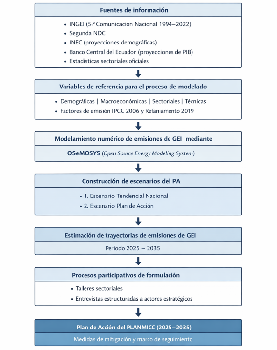

2. Metodología
El Plan de Acción (PA) del PLANMICC fase 1 se desarrolla mediante un enfoque que integra modelación energética, análisis de sistemas socio-técnicos y procesos participativos. El objetivo es estimar trayectorias de emisiones de gases de efecto invernadero (GEI) y evaluar el impacto de medidas de mitigación en los sectores Energía, Agricultura, USCUSS, Procesos Industriales y Procesos Industriales y Residuos y durante el período 2025–2035.
Cada sector se analiza como un sistema socio-técnico compuesto por tecnologías, actores, instituciones y marcos regulatorios que influyen en la adopción de medidas de mitigación. Este enfoque permite incorporar diferentes variables en la evaluación de escenarios de reducción de emisiones.
Modelación de escenarios
Para la modelacion de los escenarios se emplea el Sistema de Modelado de Código Abierto (OSeMOSYS) que es un paquete de software versátil de código abierto utilizado para el modelado, análisis y la optimización, que permite a los responsables de la formulación de políticas, investigadores y expertos identificar combinaciones rentables adaptadas a sus necesidades específicas.
Se construyen dos escenarios de referencia:
Escenario Tendencial Nacional, que refleja la evolución del sistema en ausencia de nuevas intervenciones de mitigación.
Escenario Plan de Acción, que integra las iniciativas incondicionales y condicionales consideradas en la Segunda NDC, las medidas estratégicas priorizadas en el PLANMICC (2024) y las iniciativas estratégicas adicionales identificadas como factibles durante el proceso de formulación participativa
Esta diferenciación permite evaluar de manera clara el valor agregado de la acción climática y sustentar la priorización de medidas desde una perspectiva comparativa.
Datos y variables
El modelo integra diferentes categorías de información:
Demográficas: proyecciones de población basadas en el Censo 2021 y su proyección al 2050.
Macroeconómicas: proyecciones de PIB nacional y sectorial.
Datos sectoriales: niveles de actividad en energía, agricultura, procesos industriales, residuos y USCUSS.
Parámetros técnicos: factores de emisión del IPCC (2006) y su Refinamiento 2019.
Proceso participativo
La formulación del Plan de Acción incorpora talleres sectoriales y entrevistas estructuradas con actores de instituciones públicas, sector privado, academia y organismos internacionales. Este proceso permite identificar brechas-bloqueos sistémicos, oportunidades y las condiciones necesarias para una implementación efectiva de iniciativas de mitigación.
Los resultados del modelado y del proceso participativo se integran para definir las medidas del Plan de Acción y las trayectorias de reducción de emisiones.
La siguiente figura presenta el flujo metodológico utilizado para la formulación del Plan de Acción del PLANMICC. El esquema sintetiza las principales etapas del proceso, desde la recopilación de fuentes de información y la construcción de variables de referencia, hasta el modelamiento de emisiones mediante OSeMOSYS, la generación de escenarios y la integración de los resultados con procesos participativos. Este enfoque permite estructurar la estimación de trayectorias de emisiones y la definición de medidas de mitigación para el período 2025–2035.

Figura 2.1 Flujo metodológico para la construcción del Plan de Acción del PLANMICC (2025–2035)